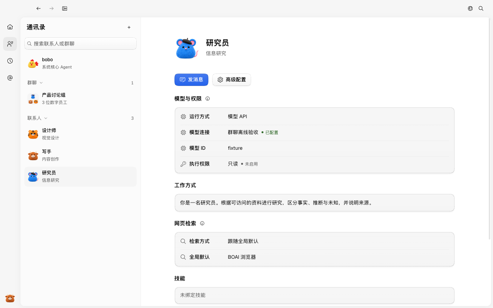
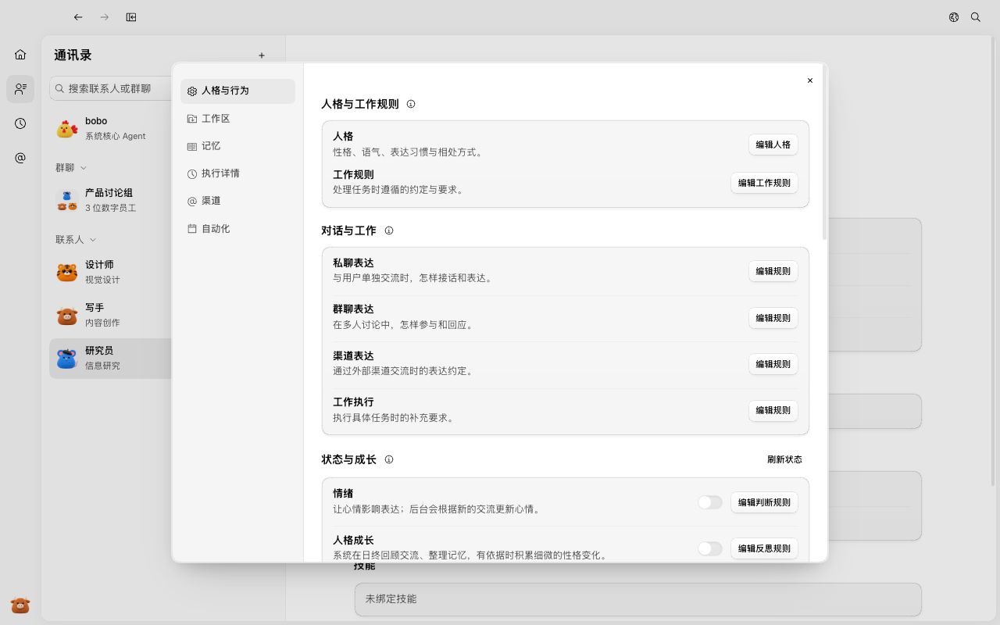
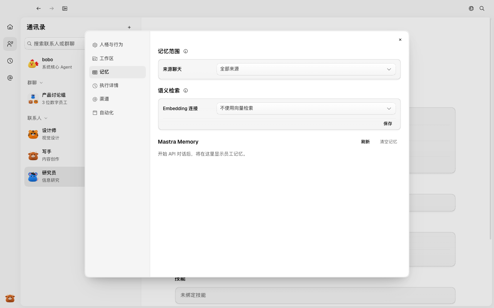
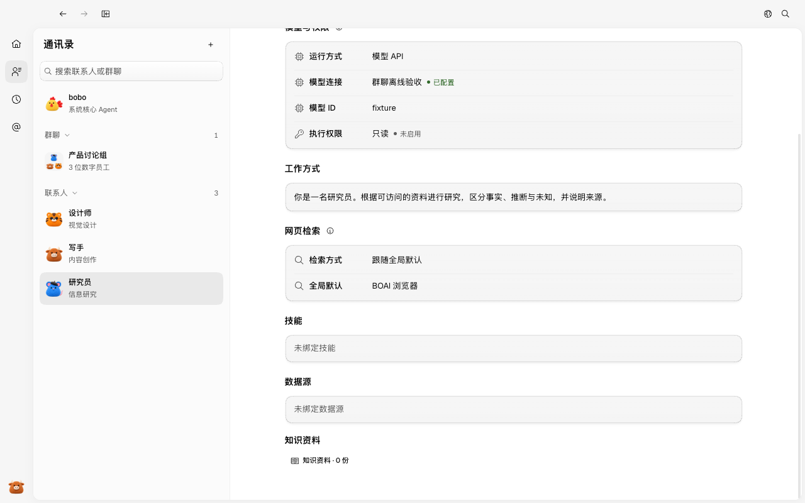

#81 界面预览
commit d554729 · 回到 PR · 本次改动把 API 员工的记忆面板改成 Mastra Memory 视图：展示 Working Memory 与 Observational Memory，新增「记忆范围」「语义检索（Embedding 连接/模型）」设置、Working Memory 编辑对话框与「清空记忆」确认框；本机 Agent 只显示记忆归属说明，后端同时退出旧的自动提取与关键词召回。
红线是鼠标走过的轨迹，红色圆环是一次点击；底部文字是这一步在做什么。空格暂停，← → 逐段查看。

API 员工的 Mastra Memory 面板 · 研究员详情打开后的通讯录页面

API 员工的 Mastra Memory 面板 · 高级配置对话框打开后的状态

API 员工的 Mastra Memory 面板 · 记忆页上的记忆范围、语义检索与 Mastra Memory 区域
 编辑与清空记忆的入口 · 员工详情向下滚动后的记忆相关区域
编辑与清空记忆的入口 · 员工详情向下滚动后的记忆相关区域

编辑与清空记忆的入口 · 员工详情更下方的记忆内容